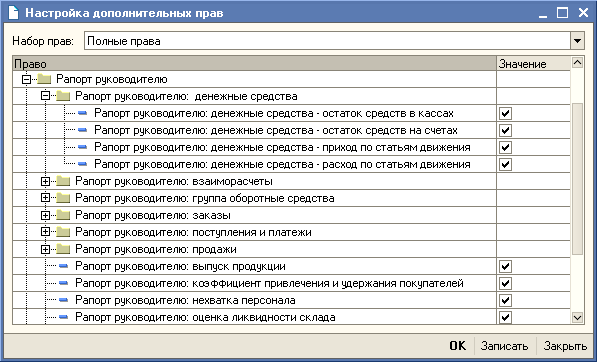

Отчет "Рапорт руководителю" предназначен для представления сводной информации о текущем состоянии дел предприятия руководству предприятия.
В отчете проводится оперативный анализ данных по различным показателям: по объему продаж, по дебиторской и кредиторской задолженности, по исходящим и входящим платежам и т.д.
Для удобства анализа, в отчете предусмотрено следующее графическое представление данных: графики сравнения различных показателей с запланированными или с такими же показателями за прошлый период. По каждому показателю дается подробная расшифровка в виде соответствующего отчета.
Состав показателей и порядок вывода информации определяется пользователем в настройках отчета.
Настройка отчета заключается в выборе показателей выводимой информации и определении порядка их следования в отчете. Начало периода, за который формируется отчет, по умолчанию берется из реквизита "Основная дата начала отчетов" справочника "Пользователи". Настройки отчета автоматически сохраняются после формирования отчета.
Состав показателей, которые будут доступны пользователю для просмотра, определяется наличием права пользователя на просмотр показателей этого отчета, которое задается в настройках дополнительных прав пользователя.

Состав и порядок вывода информации определяется данными таблицы «Настройка показателей», которая вызывается при нажатии на кнопку «Настройка».
В рапорте руководителю будут представлены все показатели, указанные в этом списке. Порядок представления данных в отчете определяется тем, в каком порядке они расположены в данном списке. Изменение порядка следования показателей производится с помощью стрелок на панели управления.
Удаление показателя из списка выводимых показателей производится стандартным образом с помощью стандартной пиктограммы на панели управления.
Добавление показателя производится из общего списка возможных показателей, который открывается при нажатии на кнопку «Из списка». В общем списке показателей будут показаны только те показатели, для которых у данного пользователя установлены права на просмотр.
Для каждого показателя определен строго определенный список параметров. Список параметров для показателя открывается при нажатии на кнопку «Параметры».
Поскольку отчет предназначен для получения оперативной информации об ежедневной деятельности компании, в нем предусмотрены механизмы автоматического формирования и обновления данных.
Рапорт руководителю может быть также отправлен по электронной почте в определенное время, в соответствии с заданным в настройках списком рассылки.
Все эти настройки устанавливаются в форме «Настройка показателей» на закладке «Дополнительно».
В группе «Дата формирования» настраивается дата формирования отчета. Отчет можно сформировать на текущий день. Предусмотрено также формирование отчета на дату, раньше указанной даты, например за прошлый день или за несколько дней от текущей даты. При этом можно учитывать выходные дни.
Например. В понедельник руководитель хочет посмотреть отчет за пятницу прошлой недели. Тогда он устанавливает параметр «Дней до текущей даты» - «1 день» и устанавливает флаг «Учитывать выходные». При этом в поле «Дата формирования» будет показана та дата (пятница прошлой недели), на которую будет сформирован отчет.
В группе «Дополнительно» указывается период автообновления отчета (в минутах) и выбирается вид, в котором будет сформирован отчет во внешний файл – Таблица (mxl) или файл в формате HTML.
В группе «Параметры публикации» указывается каталог, в который автоматически будут формироваться отчеты и список рассылки для автоматической рассылки отчета по электронной почте. При составлении списка рассылки можно использовать адресную книгу.
Если используется встроенный почтовый клиент, то необходимо указать параметры учетной записи встроенного почтового клиента.
В список «Время публикаций» заносится время, когда отчет должен быть опубликован (записан в указанный каталог или передан по электронной почте).
Параметры автоматического формирования и обновления отчета сохраняются вместе с настройками пользователя для данного отчета.
Для того, чтобы отчет был отправлен автоматически, на рабочем месте пользователя в указанное время публикаций должна быть открыта форма отчета.
В данном списке представлены показатели, используемые в отчете «Рапорт руководителю».